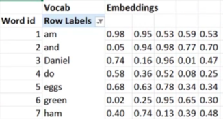

Natural Language Processing (NLP)
Word Embeddings
We represent words as vectors.
This example each word is represent by a vector of 5 numbers.

Vectors normally range from sizes of 50-200 numbers. This allows words to have more meaning and relationships between other words
Some pre-trained embbedings are Word2Vec and Glove
Language modelling
a model that can predict the next word in a sentence given a few words of a sentence
torch text is pytroches nlp
Tokenization breaks words into tokens.